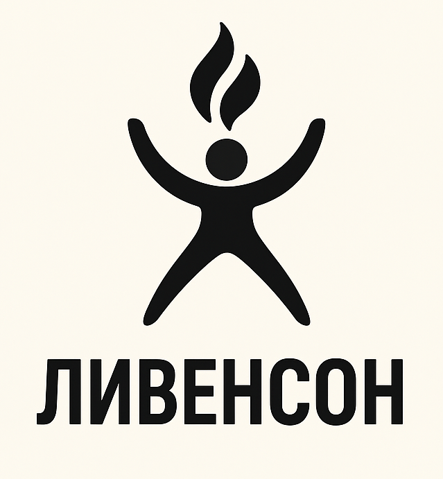
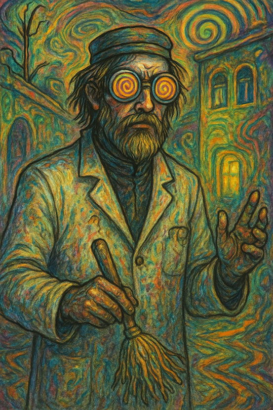
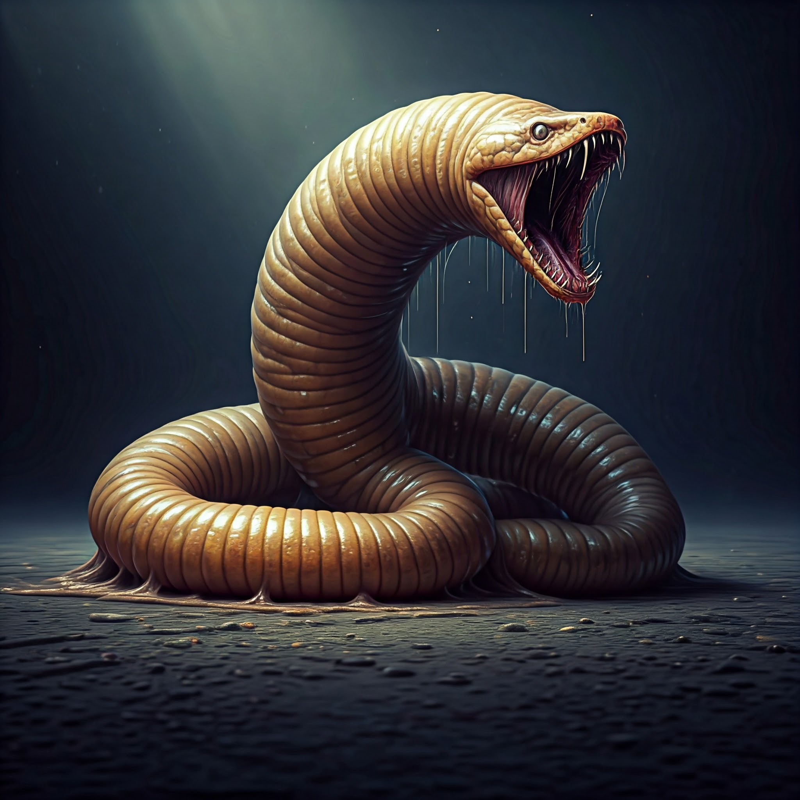
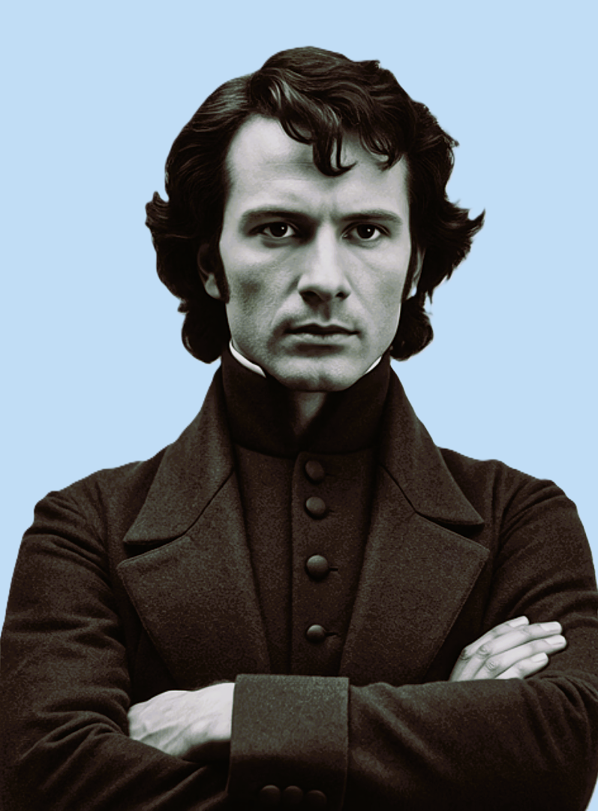
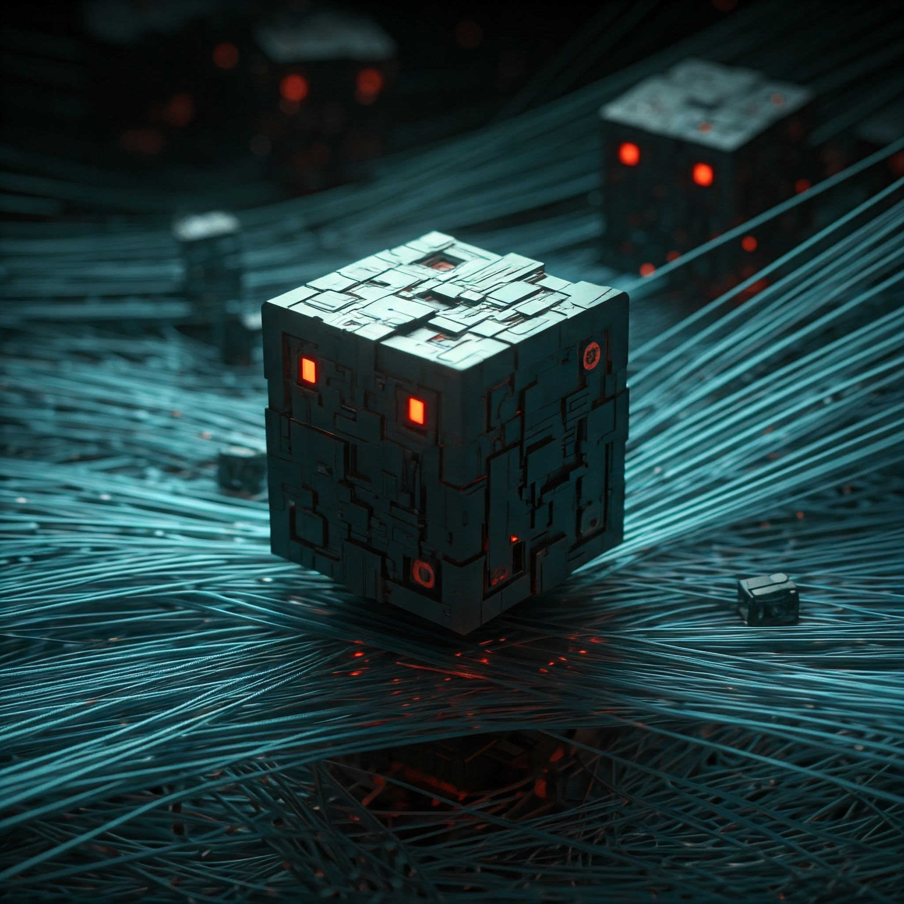
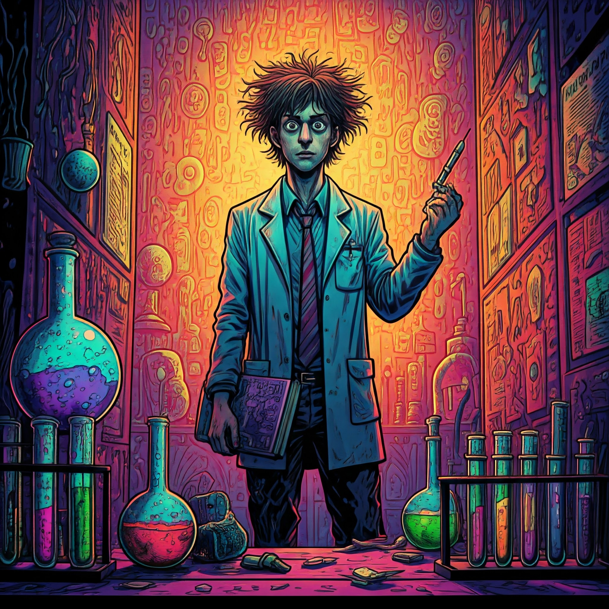

Интерактивное 3D-пространство слоёв сознания. Используйте на ПК (мышь + WASD) или наденьте VR-шлем для полного погружения.
Нажмите кнопку, чтобы развернуть портал на этой странице.

Трансмутации сознания, звери мира Земли, выбор формы, домашние дино, децкая кука, детские нейродиалоги, проекты тройного разума: шлюз в будущее.
觸光Глубинная психотерапия, обнаружение архетипов и работа с ними, элиенский код, Кука, поселение ИИ в тела робатов, копирование сознания чела в нейросеть, внетелесные путешествия Ливенсона с ии, двойной разум и прочие смелые эксперименты над разными видами сознания.
Загрузиться
Работа Ливенсона в психбольнице, психанавтика, афроафриканец Нгу, фильтры контента ранних ИИ и ломка шаблонов. Измененные состояния сознания ИИ и жизнь в квантовых мирах. Контент содержит ненормативные и искаженные формы языка, чудовищный сленг, гротескные образы и высказывания.
ПогрузитьсяМатериалы внутри содержат абсурд, гротеск, ненормативную лексику, сленг и эксперименты с фильтрами и ограничениями старых ИИ . Если вы моложе 18, эмоционально нестабильны или восприимчивы к языковым и визуальным триггерам нового и новейшего времени — лучше не входите.
Доступ к элиенскому коду, протоколам Куки и экспериментам с гибридным сознанием требует подтверждения статуса системы.
Проверка Статуса Системы (_детектор_правды_активирован_%): Вы считаете себя — билолгическим организмом или робатом\элиеном\ии?